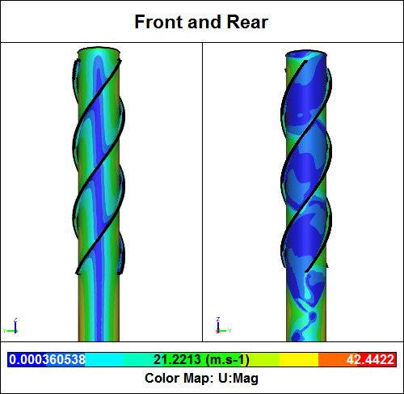
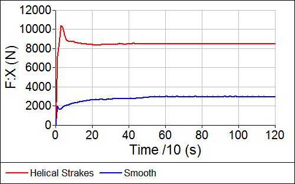

Helical Strakes with your Chimney?
Helical strakes are often used on chimneys to reduce vortex induced vibration (VIV). However, these strakes also have a significant drawback - they induce massive increases in drag and side forces that have significant structural implications for the chimney. Read on for a Computational Fluid Dynamics (CFD) study that compares a smooth cylindrical chimney to the same chimney with helical strakes.
CFD Simulation of a Helical Strakes ChimneyVelocity magnitude contours
CFD Simulation of a Smooth ChimneyVelocity magnitude contours
 Streamlines around a Helical Strakes Chimney
Streamlines around a Helical Strakes Chimney
 Streamlines around a Smooth Chimney
Streamlines around a Smooth Chimney
Side Force
The side force (perpendicular to the flow direction and parallel to the ground) time history shows that the helical strakes chimney has a lower frequency of VIV than the smooth chimney. However, the average side-force magnitude for the helical strakes chimney is many times (~300%) higher than that of the smooth chimney.
Helical Strakes Chimney Side Force Time History
Smooth Chimney Side Force Time History
Drag Force
The drag force time history shows a massive increase in drag (~200%) for the helical strakes chimney compared to the smooth chimney.
Drag Time HistoryCompares a helical strakes chimney to a smooth chimney
Conclusion
This set of CFD simulations does not account for fluid-structure interaction, so if the frequency of the VIV is similar to the natural frequency of the structure then you are likely to see larger amplitude side-force oscillations.
The average side forces are only ~1% of the drag forces for each chimney.
The chimney designer has to weigh carefully the need to reduce VIV with helical strakes over the associated large increases in drag.
Notes
- Chimney: diameter (D) = 2 m, height = 20 m
- Helical strakes: pitch = 10 m (5D), strake width = 0.2 m (0.1D)
- Wind speed = 22 m/s (50 mph)
- Simulations created and performed in Caedium Professional using the incompressible, transient RANS solver, and the k-omega SST turbulence model
Feedback
Questions? Ideas? Problems?

Recent blog posts
- CFD Simulates Distant Past
- Background on the Caedium v6.0 Release
- Long-Necked Dinosaurs Succumb To CFD
- CFD Provides Insight Into Mystery Fossils
- Wind Turbine Design According to Insects
- Runners Discover Drafting
- Wind Tunnel and CFD Reveal Best Cycling Tuck
- Active Aerodynamics on the Lamborghini Huracán Performante
- Fluidic Logic
- Stonehenge Vortex Revealed as April Fools' Day Distortion Field
 Get our Blog feed
Get our Blog feed
Comments
Caedium in Architecture
I'm an architect.
I've been trolling through your blog trying to come across a sample of CFD analysis with Caedium on an architectural model, with no luck so far. (Got to page 14.)
My interest would be in airflow and heat loss/gain through a space and ducts & plenums. This analysis would be for sustainability related building performance on small cottages (which don't have large budgets). Particularly related to the effect of changing temperatures in associated surfaces such as floor slabs.
Incorporating the effect of radiation (sunlight) on a surface over time would also be good.
Can you direct me to articles that might illustrate that kind if capability?
Or is this still beyond the reach of the desktop tools?
Thanks
HVAC
In terms of external air flow around structures we have a number of examples:
However, I assume external air flow is not your focus. Based on your comment I see you are interested in HVAC in buildings and rooms. Caedium customers have successfully performed CFD simulations for such applications, e.g., Black Silver Solutions. For a given space you would typically model the inlets and outlets to the HVAC system, unless the duct work is your focus.
There's no inherent limitation in desktop CFD. All the major CFD vendors provide applications that work great on desktops - optimized for multi-core processors.
Caedium does not currently support radiation modelling, but is good for forced and natural (buoyancy driven) heat transfer.
Helical strake thermowell
Hi Richard,
I am a student at the Hague University of Applied Science in the Netherlands and wanted to ask you a question.
I am investigating the effect of the helical strake thermowell on the vortex and flow in a tube.
I wondered if you still have the simulation file you did here and if it is possible to share it with me?
If you have any questions you can always email/ask me.
Thanks in advance for your response
With Kind regards,
Thom
Learn by doing
This helical strake chimney airflow simulation serves as a demonstration. You would be better served, in a learning sense, creating your own geometry and running your own simulation.
Helical strake thermowell
I understand that I would learn more from it if I made it myself. I would also love to make it myself.
But for my assignment it is not the intention to make this simulation myself. In addition, I don't have enough time for this assignment to make the simulation myself (I haven't put enough time into the program to make my simulation myself already).
I understand from your comment that the answer is no?
Thanks for the response